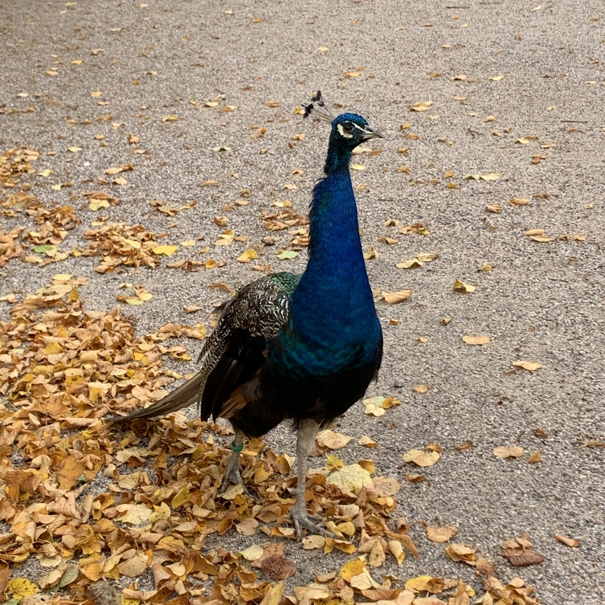
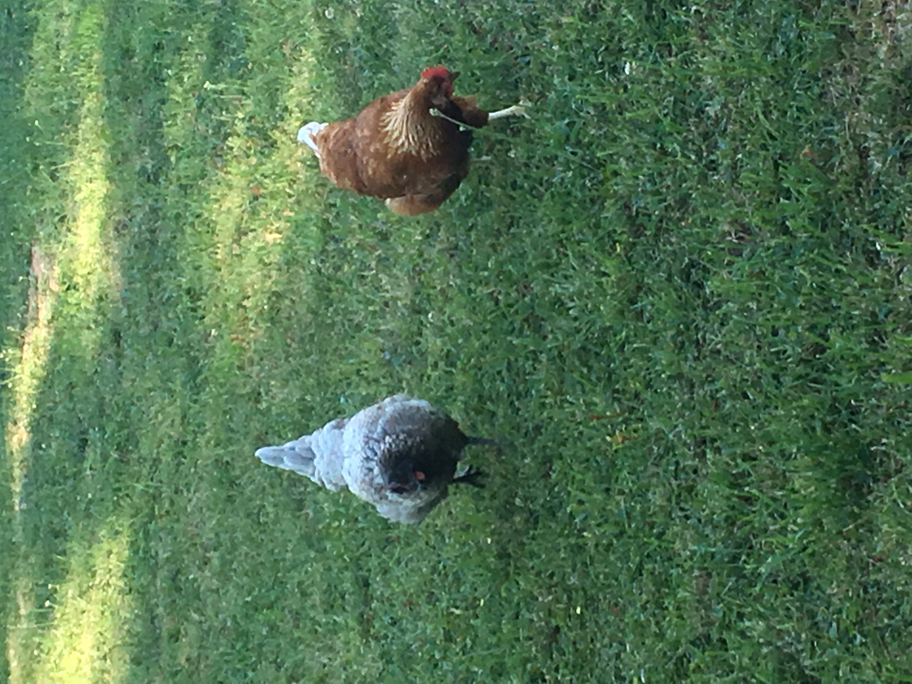

Relax on the countryside!
Things to do in the country
- Pet and feed the animals
- Eat fresh food straight from the ground or trees
- Wonder in the woods
- Drive a tractor
- Horseback riding
 Peacock (own photo)
What is country?
Country (also called country and western) is a genre of popular music that takes its roots from genres such as blues and old-time music, and various types of American folk music including Appalachian, Cajun, and the cowboy Western music styles of Red Dirt, New Mexico, Texas country, and Tejano. Its popularized roots originate in the Southern United States of the early 1920s.
Country music often consists of ballads and dance tunes with generally simple forms, folk lyrics, and harmonies mostly accompanied by string instruments such as banjos, electric and acoustic guitars, steel guitars (such as pedal steels and dobros), and fiddles as well as harmonicas. Blues modes have been used extensively throughout its recorded history.
Read more from Wikipedia!
Pics from the countryside
 Cows at sunset (own photo)
Cows at sunset (own photo)
 Chickens (own photo)